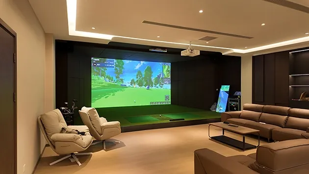

Standard · $13,300 USD
Start here for a fixed hitting surface and 2K projection. Measure the proposed screen width so the installer can check the projector position and image size.
Choosing a P8 for home starts with two decisions. Will the bay stay set up between sessions, and which projector and playing surface do you want? For a paid venue, start with the commercial bay budget.

All three P8 packages pair shot tracking and software with a computer, laser projector, impact screen, hitting mat and automatic tee-up. The main choices for a home studio are projection resolution and the motion swing plate.
Start here for a fixed hitting surface and 2K projection. Measure the proposed screen width so the installer can check the projector position and image size.
For $1,800 more than Standard, the catalog lists 4K projection and a higher-specification computer. Ask for the quoted projector and computer models before choosing the upgrade.
Choose this configuration if you want an eight-way motion swing plate with 4K projection. Have the installer check the finished playing height and how the plate will meet the surrounding floor.
Equipment prices from the PGM catalog. Ask for an itemized quote covering delivery to your address and the work required in your room.
Mark the parking space, the proposed screen line and the area the door passes through as it opens. Photograph the rails, opener and crossbars with the door open and closed. Tell PGM which floor area must be clear again after play.
Ask which components would stay fixed, which could be moved and whether they would need realignment. Confirm the changeover plan before ordering.
Measure the usable depth and width and the height below the lowest obstruction. The PGM standard flat-screen reference is 6.0 × 4.0 × 3.0 m (about 19.7 × 13.1 × 9.8 ft). Player handedness, swing space, screen clearance and mounting positions still need a layout review.
For a home quote, include your destination, preferred package, room measurements, door photos and any equipment you want to reuse. For a business, see the single-bay opening budget.
Plan bay count, customer circulation, commercial software rights and daily maintenance. Define local installation and after-sales responsibilities in the project scope.
Plan a commercial venue →Measure the clear room, including beams, doors and lighting. Player height, handedness and club choice affect the swing area; an equipment footprint is not a safety clearance.
Review the garage setup checklist →Define which measurements, practice modes and observation functions the coach needs. Check supported metrics and camera or console integration for the selected system.
Review the P8 system →With your permission, we use Google Analytics to understand website visits and improve our content. You can contact us without accepting analytics.
This website is operated by 佛山市顺德异邦高尔夫用品有限公司, owner of the PGM brand. Contact: tracy@pgmgolf.com.
Essential delivery, security and form services support this website. Details you submit are used to handle your enquiry. If you accept analytics, Google processes visit and interaction data as described in its Privacy Policy. Our custom events exclude your name, email, company and message.
Only predefined marketing channel labels are retained in this tab for up to 30 minutes after analytics consent. Arbitrary query parameters and fragments are removed from analytics page URLs. Your analytics choice is saved in this browser for 180 days. Use the footer to change it; declining stops collection and clears this site's analytics cookies and stored campaign labels.